Overview
A guide to publishing a streamlit application in Google Cloud using a Docker container. This guide will also include steps to setup an OAuth security layer using GCP’s Identity-Aware Proxy, so only individuals with a certain google email domain can access it. It should be noted that these steps will work to publish any docker container, but this guide will showcase streamlit in particular.
Prerequisites:
- A Google account with access to the Google Cloud Console.
- A Google Cloud Project with access to a billing account.
- A functioning dockerized streamlit application (or other application) being run on port 8080. This is Cloud Run’s default port. You may use a different port if you to change settings in Google Cloud during the Cloud Run deployment process.
- (For OAuth with Identiy-Aware Proxy) Ownership of a domain. (example.com)
Throughout this tutorial, Google Cloud will state its need for certain services to be enabled. Enable them as they come.
Hosting Docker Containers with Cloud Run
There are two main avenues for getting a docker container to Cloud Run:
- Setting up Continous Deployment through Github
- Uploading Docker containers manually to the Artifact Registry
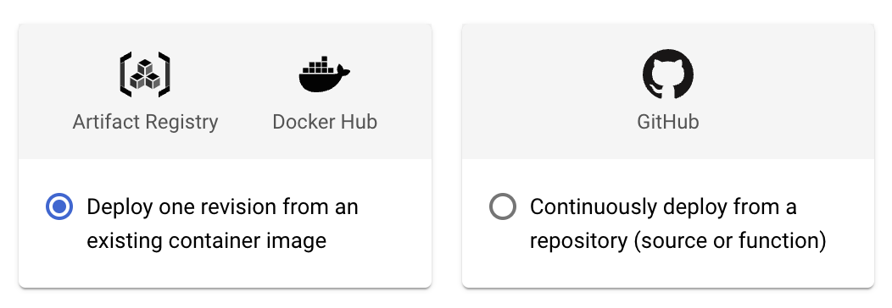
Here is a quick breakdown of the pros and cons of each:
Continuous Deployment via Github
Pros:
- With each push to a designated branch, Google Cloud will automatically deploy that latest push.
- If the latest push’s Docker container doesn’t successfully build, the last working container will continue to run.
- Does not require working with Google Cloud’s CLI.
- Takes less than 5 minutes to implement.
Cons:
- Requires strict Github protocal. Accidently pushing changes to the branch that have a fatal error on the application’s end (not a docker build error) will result in a broken application for the end user
Manual upload to Artifact Registry
Pros:
- Seperates Github branch from the production-level product
Cons:
- Each update to the product requires manual redeployment. (Obviously)
- Requires setting up Google Cloud CLI on a computer, linking it to your GCP.
Continuous Deployment via Github
Navigate to Cloud Run in the Google Cloud Console
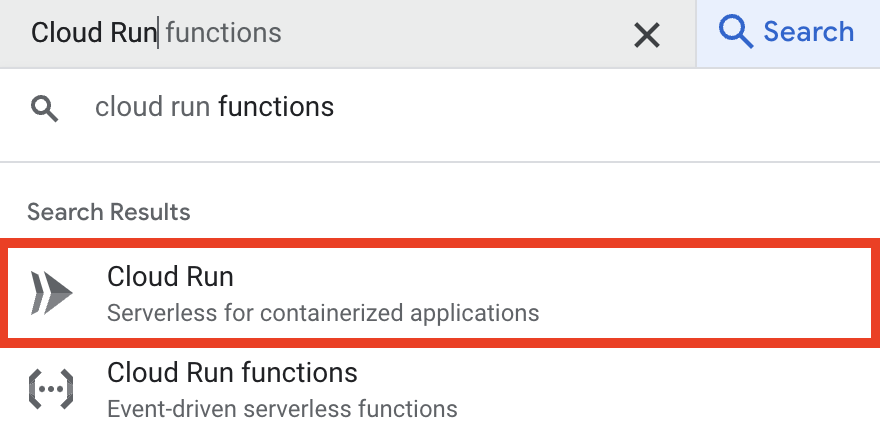
and select “Connect Repo”.
Give the service a name, and select a region.
The only imperative settings here are Authentication and Ingress Control. If you want you application available to all public, select Allow unauthenticated users and All for Ingress Control. Otherwise, to setup OAuth with Identity-Aware Proxy, we will select Require authentication and Internal the checkbox Allow traffic from external Application Load Balancers. You may consider changing other default settings to meet your needs.
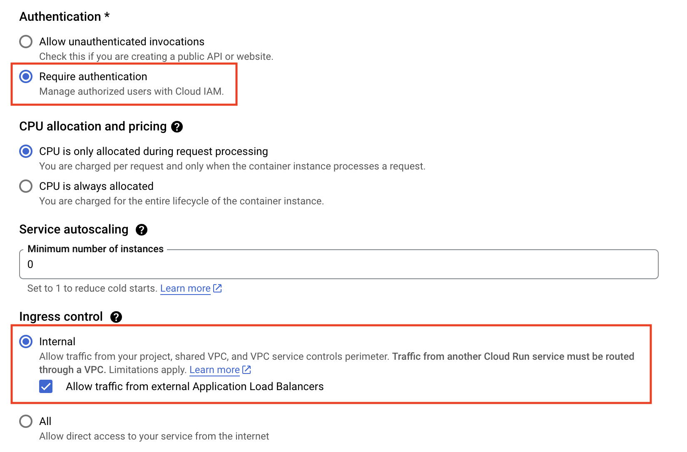
For streamlit apps, we also want to enable Session Affinity. This will fix a host of problems that would otherwise arise.
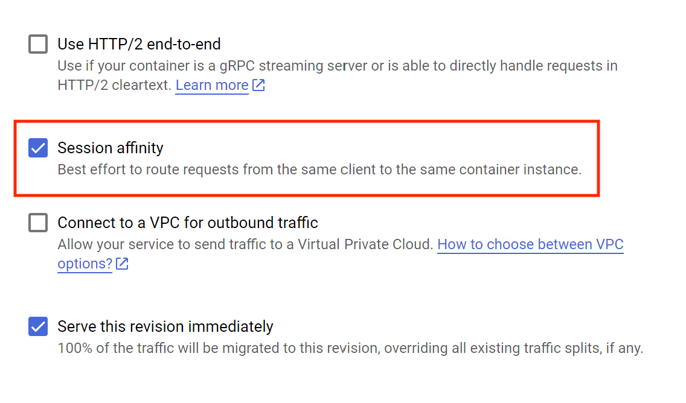
Hit Deploy!
If you aren’t adding OAuth, then you are done! Google will give you a url to access your Cloud Run service. If you own a domain and want to use a custom link, click on your Cloud run service, and look into the Integrations tab. There is an integration for Custom Domains.
To add OAuth, move onto OAuth with Identiy-Aware Proxy.
Manual upload to Artifact Registry
Setting up Google Cloud CLI
Begin by installing Google Cloud CLI
You may need to restart your terminal for gcloud to be added to your PATH.
Then, run gcloud init to configure google cloud CLI, and connect it to your google cloud account.
Switch your to your active Google Cloud Project: gcloud config set project PROJECT_ID
Uploading the Docker image to Artifact Registry
Create a Artifact Registry Repository
Open your Google Cloud Console, and navigate to the Artifact Registry. There, create a repository to store docker images. This can also be done via command line with the followoing code:
gcloud artifacts repositories create ARTIFACT_REPO_NAME --repository-format=docker --location=REGION --description="DESCRIPTION"Arguments:
ARTIFACT_REPO_NAMEandDESCRIPTIONcan be whatever you want them to be.REGION: Reference Google Cloud Documentation to decide which region would be best for your application. Generally, pick the region closest to you.
We will also want to give our account the necessary permissions to upload Docker images to the Artifact Registry. Navigate to the IAM section of “IAM & Admin”. Find your google account, and add the role “Artifact Registry Writer” to your account by clicking the small pencil on the far right of your account row.
Uploading the Docker Image
Now open a terminal and navigate to the root folder of your Dockerfile.
Run the following command to upload your Docker image:
gcloud builds submit --region=REGION --tag REGION-docker.pkg.dev/PROJECT_ID/ARTIFACT_REPO_NAME/NAME_OF_IMAGE:TAGArguments:
REGION: Region as selected earlierPROJECT_ID:- Look in Project Settings or…
- Programmatically: gcloud config get-value project
ARTIFACT_REPO_NAME:- The name of the repo you made earlier
NAME_OF_IMAGE:- Name of your choice
TAG- Not neccessary
- Tag of your choice, normally used for version history (i.e. 1.12.2) or to describe the particular update
Running Docker image with Cloud Run
Now, navigate to Cloud Run and follow the same steps as shown in the continous deployment method, except this time we will select our image from the Artifact Registry with the “Deploy one revision from an existing container image” option.
Just like in the other option, Google Cloud will create a link you can use to access your Cloud Run Service. (See Continuous Deployment section for notes on custom domains)
OAuth with Identity-Aware Proxy
Christo Olivier gave a phenominal tutorial on the following process in his youtube video. Much of this guide follows his steps, with some additional solutions to issues I ran into following his tutorial.
Enable IAP API
First, lets enable the Identity-Aware Proxy API and configure the OAuth consent screen.
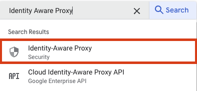 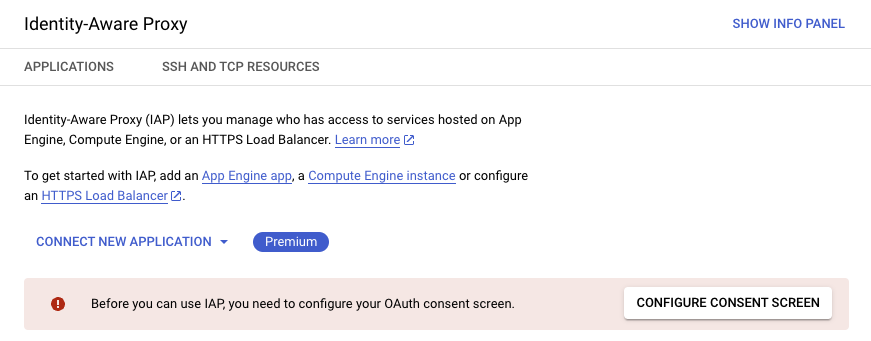
With our goal to only allow those with the same google org email domain to access our Cloud Run Service, we will select “Internal”:
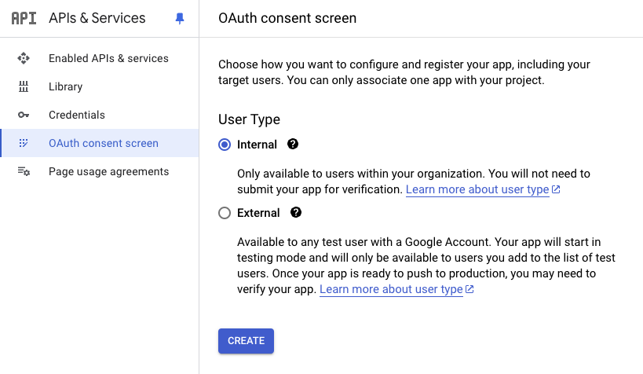
Fill out the required feilds:
- App Name
- User supported email
- Developer email address
You may also consider uploading an app logo to improve the look of your OAuth consent screen.
We will not need any user scopes, as our application does not need any information about the particular user in our organization, so hit “Save and Continue”.
Create a Load Balancer
For a Cloud Run service to have an Identity-Aware Proxy OAuth layer, it must be fed through a Load Balancer.
Navigate to “Load Balancing” under the “Network Services” Category
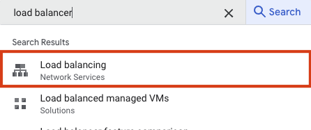
Create a new load balancer, and configure with the following choices: - Application Load Balancer (HTTP/HTTPS) - Public facing (external) - Best for global workloads - Global external Application Load Balancer
Frontend:
- Name doesn’t matter: streamlit-fe (fe for front end)
- Protocal: HTTPS
- IP address: Create IP Adress
- Name doesn’t matter: streamlit-ip
- Certificate: Create a New Certificate
- Create mode: Create Google-managed certificate
- Give it a domain you plan to host the streamlit app on.
- EX: reports.sales.name-of-domain.com
- Enable HTTP to HTTPS redirect
Backend:
- Create a Backend Service.
- Name doesn’t matter: streamlit-be
- Backend Type: Serverless network endpoint group
- Serverless network endpoint groups: Create Serverless Network Endpoint Group
- Name doesn’t matter: streamlit-neg
- Region: Choose the same region your Cloud Run service is hosted in
- Select that service
Routing Rules:
- Keep on "Simple host and path" ruleClick Create
Once the load balancer has been created, click on it, and view the frontend IP address.
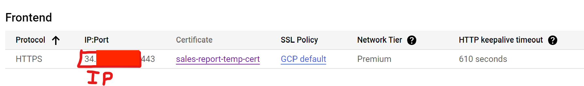
You will need to swiftly enter this ip address into the domain with the corresponding domain or subdomain. For example, managing a domain via squarespace would look something like this:
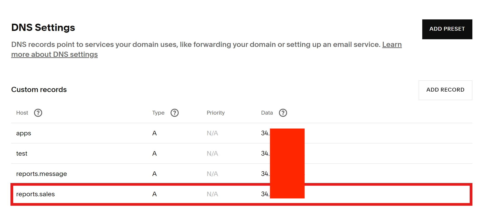
We choose Type “A” because our Data entry is an IP address. The Host section is reports.sales, because I have chosen to host this app on reports.sales.name-of-your-domain.com, which matches the domain entered into the certificate of the load balancer.
Once this step is complete, view the certificate of the load balancer. It may take 5 minutes to an hour, but so long as the domain information was entered correctly on both the certificate’s end and the domain’s end, it should eventually pivot from “PROVISIONING” to “ACTIVE”.
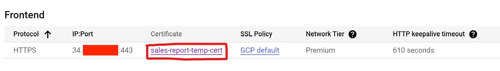
Enable IAP for Load Balancer
Return to the Identity-Aware Proxy section. You should see the backend of our load balancer we created on the IAP screen. Enable it for IAP, and ADD PRINCIPAL to organization-name.com to have the IAP-secured Web App User role.
Enabling IAP should have created an IAP service bot that we need to give access to invoke our Cloud Run service. Return to IAM & Admin, and give service-PROJECT_NUMBER@gcp-sa-iap.iam.gserviceaccount.com the role “Cloud Run Invoker”.
While this service bot should be automatically created, (for me) it often isn’t. However, this service bot can be created manually via Google Cloud CLI beta commands:
gcloud beta services identity create --project=PROJECT_ID --service=iap.googleapis.comThe created service account may not appear in the list service accounts in IAM, but that is okay; replace PROJECT_NUMBER with your project number, paste the account into Principal section of “Grant Access”, and give it the role “Cloud Run Invoker”.
The Waiting Game
Google says it can take up to 24 hours for this to fully work. In my trials of this process, it only took about 10-20 minutes until the website was able to link up nicely. If you get “Error: Page not found. The requested URL was not found on this server.” or “reports.sales.name-of-domain.com did not send any data”, then you did something wrong.
The error you hope to see has to do with google not being able to recongize the method of data flow (something along these lines). For me, this meant I just needed to be patient, and 10ish minutes later, streamlit loaded.
If you get “Error: Forbidden”, then something is wrong with your IAP setup. Ensure your domain has the “IAP-secured Web App” role, your iap service bot has the role “Cloud Run Invoker”, and your Ingress control allows traffic from Application Load Balancers